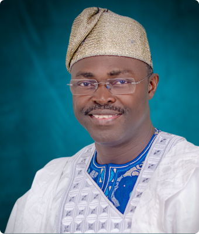

Maire de la commune de Ouidah
En tant que Maire de la ville de Ouidah, c'est avec fierté et engagement que je m'adresse à tous les citoyens et visiteurs de notre ville emblématique.
Ouidah, berceau historique et culturel du Bénin, incarne l'essence même de notre riche patrimoine. C'est un honneur pour moi de représenter une communauté si dynamique et diversifiée, où traditions et modernité se rencontrent dans une harmonie unique.
En tant que gardiens de cette histoire fascinante, nous travaillons sans relâche pour préserver notre héritage et promouvoir le développement durable. Nous engageons à soutenir nos artistes, nos artisans, et à offrir un environnement propice à l'épanouissement de notre culture vibrante.
Nous encourageons l'éducation, l'innovation et l'inclusion sociale pour bâtir ensemble un avenir prometteur pour chaque habitant de notre ville. Notre objectif est de faire de Ouidah un lieu où chacun se sent chez soi, où la diversité est célébrée et où les opportunités sont accessibles à tous.
Je vous invite à vous joindre à nous dans cette aventure collective, à embrasser notre histoire, à découvrir notre culture et à contribuer à l'épanouissement de notre ville, faisant ainsi de chaque jour passé à Ouidah une expérience enrichissante et inoubliable.
Merci de votre confiance et de votre soutien. Ensemble, bâtissons un avenir plein de prospérité, de respect et de solidarité pour notre chère ville de Ouidah.